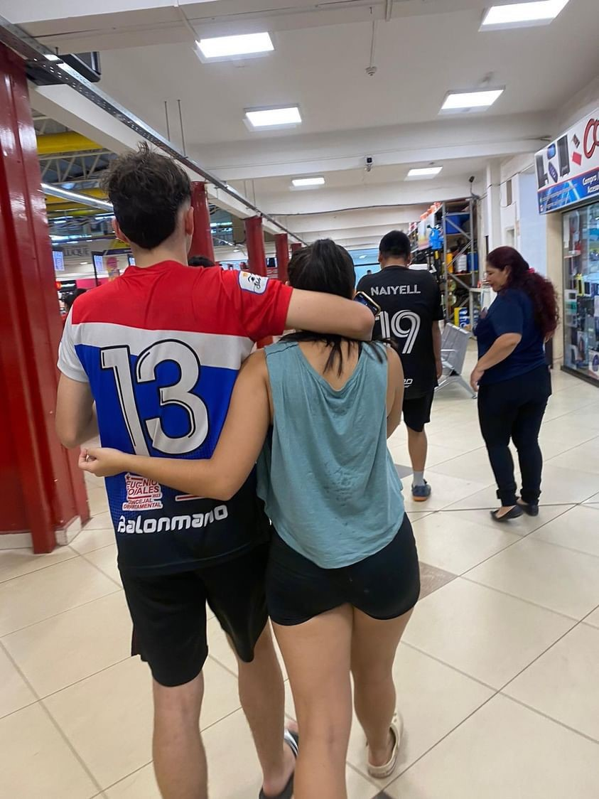
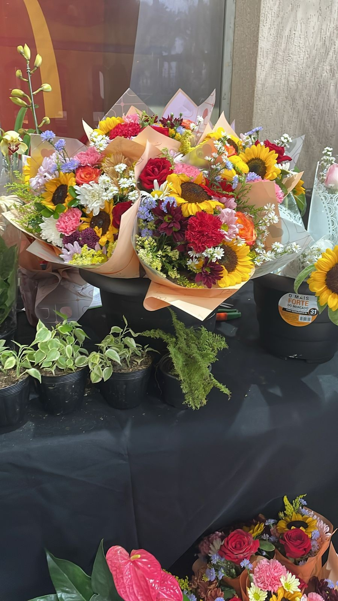
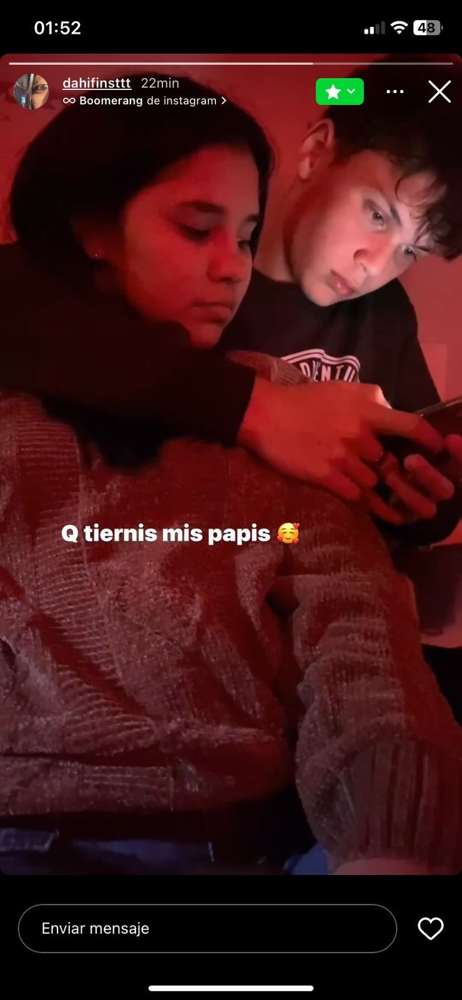

--Te amo, como nunca ame a alguien--
Hola Trini, primero que nada ¿que tal?, en este tiempo que ni siquiera nos miramos la vd que ya entendi todo lo que no entendia, entendi que sos una de las mejores personas que conoci, entendi que sos una persona maravillosa, entendi que no quiero estar lejos de vos, entendi que sos lo que busque hace años, entendi que no siempre hay que contener o guardar los problemas y que hay que hablarlos con la persona que amas, entendi que no siempre hay que seguir tus presentimientos pq pueden estar equivocados y tmb entendi que nunca va a ver una persona como vos y que me quiera como vos.

--Estaba confuso--
Al principio estaba confuso, ¿por que?. por que no sabia si me querias para algo de un rato o para algo enserio, pero igual me quede por que sentia que habia algo en vos que nunca mas voy a poder encontrar y al principio seguro me notaste distante o seco o cortante pero tmb era por muchos problemas que tenia pero seguia hablandote para no perderle a la que hasta ahora pienso que es la persona de mis sueños y la persona que busque siempre, lo que si es que desde la primera palabra que te escribi ese dia que te respondi tus historia senti algo dentro de mi que no se queria ir, desde el dia de la foto de arriba(la foto del super) senti un calor dentro mio que no era normal y ahi me hizo decidirme completamente por vos, ese dia fue el mas feliz que tuve, pq por primera vez compartimos en persona, hablamos frente a frente y te vi de serca por primera vez tmb los ojos y vi un mundo dentro de tus ojos y en ese mundo quiero vivir.

--Perdon por todo--
Por ultimo, te quiero pedir perdon, por no haberte dicho que estaba en un mal momento, perdon tmb por tratarte como te trate al principio, perdon por guardarme mis cosas, perdon por no darte ese cariño inmenso que vos me diste, perdon por haberte hecho sentir mal varias veces, perdon por no hacerte caso en las cosas que me decias que no, perdon por no creerte las cosas que me decias, perdon por aveces comportame como un idiota, perdon por enojarme por estupideses. A lo que quiero llegar con esto, es que no te quiero perder, no quiero perder a la persona que busque toda mi vida. Y seguro para vos es dificil o te confunde esto, pero yo si estoy muy seguro de lo que hago y lo que digo, y es que quiero algo contigo y no te quiero perder, y te prometo que si lo volvemos a intentar no te vas a arrepentir pq ya aprendi mis errores y eso. Te quiero muchisimo y si esto no funciona siempre vas a tener un espacio enorme en mi corazon mi trrrrinii.

--------------------------------------------------------
(Escanea esto)
(si tocas las fotos de arriba te manda a un album)